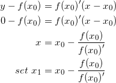

数学复习
梯度下降法，又称为牛顿法，牛顿-拉弗逊方法（后人以发现者其名命名，以表示尊重）。这个方法用于方程 f(x)=0 的求解的。
描述：给定一个初始解 x0 ，画出函数 f(x) 在 x0 的切线，用切线近似函数 f(x) ；然后求出切线与 x 轴的交点，作为 f(x) 的根，但是函数 f(x) 是弯曲的，因此交点不是精确解，因而迭代上述过程，直到收敛到一个近似解为止。
推导：
由切线的点斜式方程求得切线与 x 轴的交点，推导出第一步迭代如下：

算法：
实例：
使用牛顿法的开方公式
定理：
令ei表示迭代方法第 i 步后得到的误差，该迭代是二次收敛的，如果满足
；
其中 f(x) 是二阶连续可微函数。
说明：
最小二乘法
背景：
（1）数据矩阵异常；（2）方程个数大于变量个数（m 个方程 n个未知量，m>n）两种情况下会导致（线性）方程组无解。在方程组无解的情况下寻找“最接近”的解在实际应用中十分重要。“最接近”，有时也称为最相似，有多种定义方式。最常用的是使用欧式空间的距离概念。
由于开方内部大于等于0，因此可以只考虑开方的内部。当求得欧式距离最小的解，则称为最小二乘解。
原理：
最小二乘法基于正交，从一点到一个平面的最段距离，由一个到平面的正交线段表示，法线方程可以确定该线段，这表示最小二乘法的误差。
mn 方程组
b看作是 A 列向量的线性组合。R3中两个三维向量组合构成一个平面，当且仅当 b 在这个平面上时才有解（m=3，n=2）。推广到n维，当 m>n 时，方程组超定。在所有的解集合构成的 Ax 中存在与 b 最接近的点，并且
算法：
对于不一致系统（超定方程组）Ax=b 求解
求的就是最小二乘解，最小化余项的欧式距离
拟合：
给定一组数据